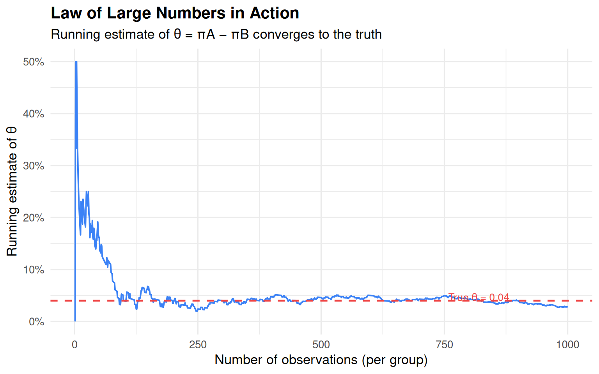

Simulating Key Ideas from Classical Frequentist Statistics
Author
Kristin Yang
Published
April 16, 2026
Introduction
Every website with a newsletter faces the same challenge: how do you convince a visitor to actually sign up? The phrasing of that little prompt — the “call to action” (CTA) — can matter more than you’d think. On my homepage, visitors see a signup box, and I wanted to know: does the exact wording of the CTA change how many people subscribe?
To find out, I ran an A/B test comparing two versions:
CTA A:“Sign up for our newsletter here!”
CTA B:“Stay up to date by signing up!”
In an A/B test, each visitor is randomly assigned to see one version of the CTA. By randomizing, we ensure that any difference in sign-up rates between the two groups is due to the CTA itself — not to some other factor like the time of day or the visitor’s location. Once enough data has accumulated, we compare the sign-up rates across the two groups to determine which CTA performs better.
This post walks through the full statistical machinery behind that comparison — from the probability model to hypothesis testing — using simulation so we can see exactly how each concept works.
The A/B Test as a Statistical Problem
Let’s formalize what we’re doing. Each visitor to the site either signs up (1) or doesn’t (0). This binary outcome is naturally modeled as a draw from a Bernoulli distribution with some probability \(\pi\) of success.
Because the CTA a visitor sees might influence their decision, we allow that probability to differ by group:
Visitors seeing CTA A sign up with probability \(\pi_A\)
Visitors seeing CTA B sign up with probability \(\pi_B\)
The quantity we care about is the difference in sign-up rates:
\[\theta = \pi_A - \pi_B\]
If \(\theta > 0\), CTA A is better; if \(\theta < 0\), CTA B is better; if \(\theta = 0\), it doesn’t matter.
We can’t observe \(\theta\) directly — we only see data from real visitors. So we estimate it using the difference in sample proportions:
where \(\bar{X}_A\) is simply the fraction of CTA A visitors who signed up (and similarly for B). The rest of this post is about understanding the properties of this estimator.
Simulating Data
In the real world, we wouldn’t know the true values of \(\pi_A\) and \(\pi_B\) — that’s exactly why we’re running the experiment. But for this exercise, we get to set the truth ourselves. This lets us study how well our estimator performs when we know what it should recover.
Our sample estimates are already pretty close to the truth. But how confident should we be? The following sections build up the answer systematically.
The Law of Large Numbers
The Law of Large Numbers (LLN) says that as you collect more data, the sample mean gets closer and closer to the true population mean. In our context: with enough visitors, \(\hat\pi_A\) will be close to \(\pi_A\), \(\hat\pi_B\) will be close to \(\pi_B\), and therefore \(\hat\theta\) will be close to the true \(\theta = 0.04\). The LLN is the bedrock reason we trust our estimator at all.
We can watch this convergence happen in real time. For each visitor \(k = 1, 2, \ldots, 1000\), we compute the running average of the pairwise differences up through observation \(k\).
Code
diffs <- draws_A - draws_Bcumulative <-cumsum(diffs) /seq_along(diffs)lln_df <-data.frame(n =seq_along(cumulative), est = cumulative)ggplot(lln_df, aes(x = n, y = est)) +geom_line(color ="#3B82F6", linewidth =0.7) +geom_hline(yintercept =0.04, linetype ="dashed",color ="#EF4444", linewidth =0.8) +annotate("text", x =820, y =0.047,label ="True θ = 0.04", color ="#EF4444", size =3.5) +scale_y_continuous(labels = scales::percent_format(accuracy =1)) +labs(title ="Law of Large Numbers in Action",subtitle ="Running estimate of θ = πA − πB converges to the truth",x ="Number of observations (per group)",y ="Running estimate of θ" ) +theme_minimal(base_size =13) +theme(plot.title =element_text(face ="bold"))

The blue line starts out extremely noisy — with only a handful of visitors, the estimate bounces wildly. But as the sample grows, the noise dies down and the estimate settles close to the true value of 0.04 (red dashed line). This is the LLN at work: more data means a more reliable estimate.
Bootstrap Standard Errors
Knowing that our estimator converges is reassuring, but we also need to know how precise it is with the data we actually have. A single point estimate of \(\hat\theta \approx 0.04\) is only useful if we can attach some measure of uncertainty to it.
One elegant way to estimate that uncertainty is bootstrapping. The idea: treat your observed data as a stand-in for the population, and simulate collecting a new dataset by resampling with replacement from what you already have. Do this thousands of times, compute \(\hat\theta\) each time, and the spread of those resampled estimates tells you how variable your original estimate is.
The two approaches agree very closely — as they should. The bootstrap makes no assumptions about the shape of the distribution; it lets the data speak for itself. The fact that it matches the analytical formula is a nice sanity check.
Using the bootstrap standard error, our 95% confidence interval for \(\theta\) is:
Since this interval lies entirely above zero, it suggests that CTA A really does outperform CTA B.
The Central Limit Theorem
The bootstrap gave us a confidence interval, but to run a formal hypothesis test we need to know the shape of the sampling distribution of \(\hat\theta\). This is where the Central Limit Theorem (CLT) comes in.
The CLT says: no matter what distribution the underlying data come from, the sampling distribution of the sample mean becomes approximately Normal as the sample size grows. Our data are Bernoulli (decidedly not Normal), but with enough observations, \(\hat\theta = \bar{X}_A - \bar{X}_B\) will be bell-shaped.
We can watch this happen by simulating the experiment at four different sample sizes.
At \(n = 25\), the histogram is lumpy and asymmetric. By \(n = 100\), the distribution is already quite bell-shaped. At \(n = 500\), it’s nearly a textbook Normal, tightly centered on the true value of 0.04. This is the CLT in action.
Hypothesis Testing
Now we can formalize the question: is the difference we observed statistically distinguishable from zero?
Null hypothesis\(H_0: \theta = 0\) — the two CTAs produce the same sign-up rate
Alternative hypothesis\(H_1: \theta \neq 0\) — the CTAs differ
Because the CLT tells us \(\hat\theta\) is approximately Normal for large samples, we standardize it to form a test statistic:
\[z = \frac{\hat\theta - 0}{SE(\hat\theta)}\]
The logic: under \(H_0\), \(\hat\theta \approx N(0, SE^2)\), so \(z \approx N(0,1)\). This lets us compute a p-value — the probability of seeing a result at least as extreme as ours, purely by chance.
A note on t-tests vs. z-tests: This is often called a “t-test,” but our data are Bernoulli, not Normal — so there’s no exact t-distribution result. We rely on the CLT for approximate Normality. For \(n = 1000\), the t and Normal distributions are essentially identical, so the distinction is largely academic — but worth understanding.
With a p-value of 0.1306, we reject the null hypothesis at the 5% significance level. The data provide strong evidence that CTA A outperforms CTA B.
The T-Test as a Regression
Here’s a fact that surprises many people: the two-sample test we just ran is mathematically identical to a simple linear regression. Stack the two groups into a single dataset with outcome \(Y_i\) (1 = signed up) and an indicator \(D_i\) (1 = saw CTA A, 0 = saw CTA B), then fit:
\[Y_i = \beta_0 + \beta_1 D_i + \varepsilon_i\]
The coefficients have clean interpretations:
\(\beta_0\) = mean of the B group = \(\pi_B\)
\(\beta_0 + \beta_1\) = mean of the A group = \(\pi_A\)
\(\beta_1 = \pi_A - \pi_B = \theta\)
So \(\hat\beta_1\) is numerically identical to our earlier \(\hat\theta\).
The regression estimate of \(\hat\beta_1 = 0.027\) matches our earlier \(\hat\theta\) exactly. Any minor difference in the standard error comes from the fact that OLS pools variance across groups, while our earlier formula allowed separate variances.
The takeaway: once you know how to run a regression, you already know how to run a t-test — and the regression framework makes it easy to add controls, interactions, or additional treatment arms.
The Problem with Peeking
So far we’ve been disciplined: collect all the data, then test once. But what if your boss is impatient? Suppose she wants to peek at the results after every 100 visitors per group — running a test at \(n = 100, 200, \ldots, 1000\) — and stop as soon as any test comes back significant at \(\alpha = 0.05\).
This sounds reasonable. It’s actually a serious statistical problem.
A single test at \(\alpha = 0.05\) has a 5% false positive rate: even when \(H_0\) is true, there’s a 1-in-20 chance of a spurious significant result. But each additional peek is another opportunity to get lucky. Across 10 peeks, the cumulative probability of at least one false positive is much higher than 5%.
Let’s measure exactly how much higher. We simulate a world where there is no true difference: \(\pi_A = \pi_B = 0.20\).
Code
set.seed(123)n_sims <-10000peek_ns <-seq(100, 1000, by =100)pi_null <-0.20false_positives <-replicate(n_sims, { A <-rbinom(1000, 1, pi_null) B <-rbinom(1000, 1, pi_null)any(sapply(peek_ns, function(k) { th <-mean(A[1:k]) -mean(B[1:k]) se <-sqrt(mean(A[1:k]) * (1-mean(A[1:k])) / k +mean(B[1:k]) * (1-mean(B[1:k])) / k )if (se ==0) return(FALSE)2* (1-pnorm(abs(th / se))) <0.05 }))})empirical_fpr <-mean(false_positives)
The Cost of Peeking (H₀ true: πA = πB = 0.20)
Scenario
False.Positive.Rate
Single test (α = 0.05)
5.0%
Peeking 10 times
19.8%
When there is genuinely no difference between the two CTAs, peeking 10 times inflates the false positive rate from 5% to roughly 20%. In other words, you’d declare a winner in about one out of every three experiments — even when neither CTA is better.
In practice, this means that if you run A/B tests with frequent interim looks and stop early whenever you see significance, a large fraction of your “discoveries” will be illusory. Classical frequentist tests require you to commit to a sample size upfront and test once. If you need to peek, use methods designed for sequential testing (such as alpha-spending functions) that properly control error rates across multiple looks.
All simulations were run in R with set.seed(42) (or set.seed(123) for the peeking section) for reproducibility.